Yondr is aimed at digitizing the scavenger hunt experience into a simple mobile app. Inspired by board game design and photography— giving the user a clear goal and the open expression of interpretation.
Project Overview
My Role:
User Research, UX Design, UI Design
Tools Used:
Adobe XD, Adobe Illustrator, Balsamiq, and lots and lots of Slack and Skype
Process:
Research //
In order to understand the problem, you must understand why it is framed as a problem. The further the understanding of the issue, the better to develop target audiences and standing out against your competitors.
Define //
By evaluating the market and gathering user feedback, I can hone the problem into a measurable and real target. To do this, I have to create the definition to base these judgements on: Who is my user and what are
they looking for achieve?
Ideate //
After creating a foundation, I begin designing the meat and potatoes by simplifying the process getting to the end goal for the user. Shortening this process is crucial and can be optimized with carefully carved
out information architecture and user flows. Both of these mapped out visually onto the sitemap.
Wireframing & Prototyping //
Having done sitemap, I move onto the wireframes and run sprints to visually draw out what I believe what could help the user achieve their goals. After several adaptations, I moved to creating a working prototype
ready for testing.
Usability Testing //
Usability testing and preference testing with as many users I could fit into schedule. I evaluate the pain points and measure the users success rate and time for design process efficiency.
Design Iteration //
By gathering a lot data and insights from usability testing and feedback, I begin making design iterations and cleaning the overall presentation until I have what I believe to be the MVP.
The Problem
Scavenger hunts are a lot of fun, however they can also be a lot of set-up. Users cannot be bothered to explore their local areas around them without the motivation of "searching for the hidden gem".
The Solution
By simplifying the creation process and headache of spreading the word, users can be pressed to the lengthy process of making a scavenger hunt and getting people to play it.We plan on creating a interactive playing process
that takes advantage of the mobile devices' camera and GPS capabilities.
Part I: Research
Competitor Analysis
As a part of my research, I was tasked with the competitor analysis. Generally with any competitive analysis, I like to dive nose first and see the competitors in action. The general consensus is that scavenger hunts
apps are difficult to manage and the market is mostly dominated by Geocaching. So I had to analyze the strongest Geocaching, along with one that approached the game differently altogether, X App. Unfortunately, around
this time the pandemic made it nearly impossible for to get an accurate reading on how many people use these apps and how they used them had also taken a shift. These are the facts I had to be mindful of throughout the
design process.
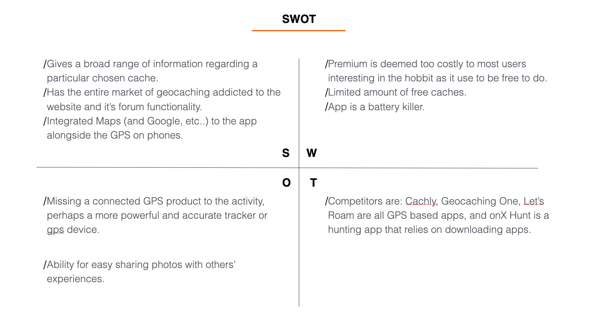
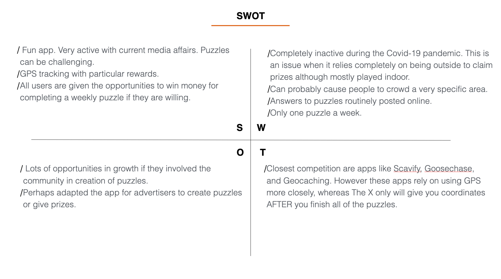
From these analyses, I could measure up the competition and gauge where they have gaps and apply my design thinking to take advantage to design a product that pressures the users to define the boundaries of what a scavenger
hunt can be and to what scale.
User Interviews
Research Goals
Learn how often user will use their phones while hiking.
Understand users' relationship with trusting maps on their phones.
Learn how often are users outside aimlessly. Why?
Understand how open are users to the concept of discovery.
Understand what tasks users hope to achieve wile using a scavenger hunt app.
Conclusions
People only use their smartphones when they know they will find something that they are looking for. Users are more likely to use an app if there are stakes of gaining bragging rights or something financially
interesting like a “Buy one get one free” coupon to a new place.
Users have a very shaky confidence in their map comprehension. A good map system will keep the users confidence in your app and will make using an app more enjoyable.
Users will usually not aimlessly go someplace. They need a landmark, a north star to follow, per se, so as to say users need a way to store the map information to have a clear pinpoint as to not stray aimlessly.
" I usually stick to my hot spots primarily, and then look for the hidden gems when I have extra time." - Participant #2
Users are keen to move more aimlessly if the are near local landmarks and if they they are familiar with the local spots.
Discovery is negatively correlated to safety in the eyes of the user. Discovering something means to take a risk, those that the users are not will to make. If there was a method to making users more open to
the concept of trying something, they would have to be motivated socially.
" " I’m concerned with safety because I am not in a familiar area, getting lost. I hate when things are not up to date." - Participant 1
Users are motivated by friends actions and are more likely to take risks if they are able to earn social credibility.
Part II: Define
User Personas
With a target audience in mind, and an amalgamation of the users interviews and surveys, I can create my user personas. Personas help me turn my bias off and shift my focus to the perspective of what my users feel and
need.
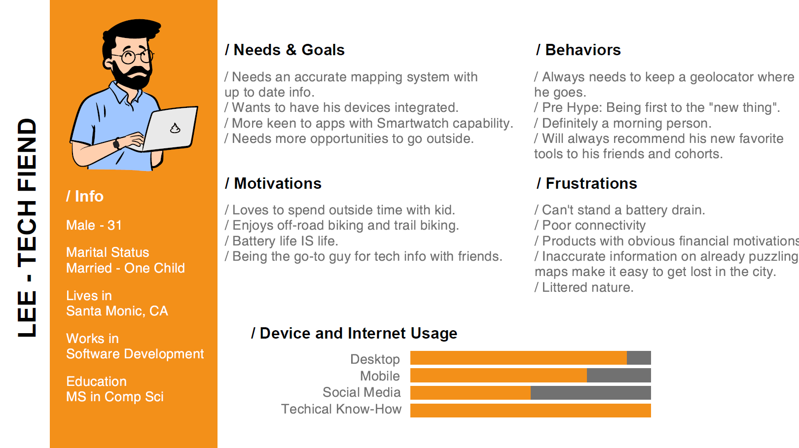
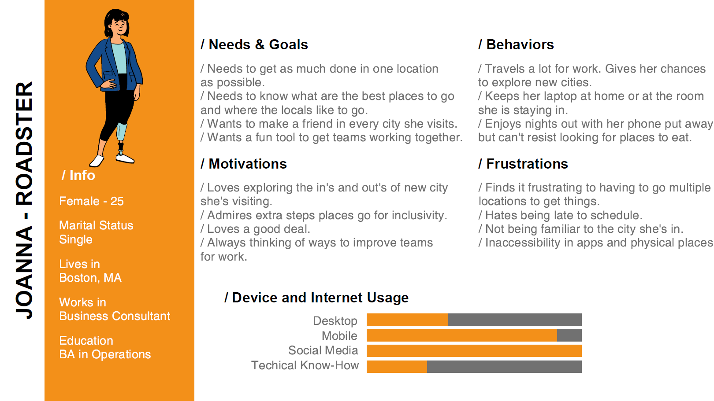
Part III: Ideate
User Task Flows
Inconsideration of my personas, I then mapped out their flows in a way I considered how the well versed hiker/biker will be capable and how someone less tech savvy will have to flow through the app to accomplish what
they want. As the design stage progressed and the ideation shifted, so did the target goals.
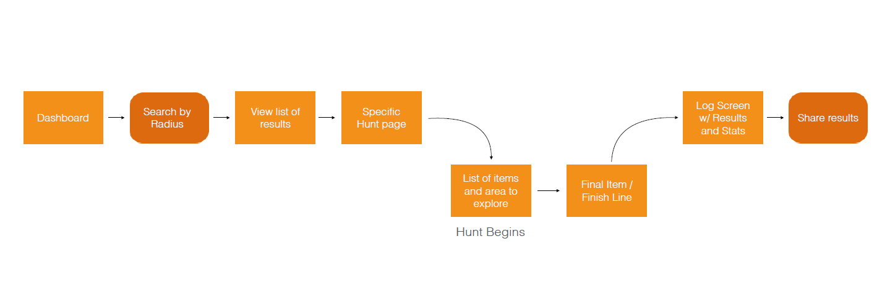
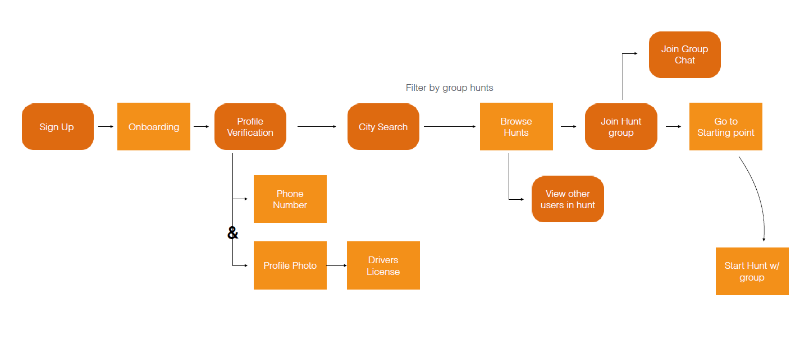
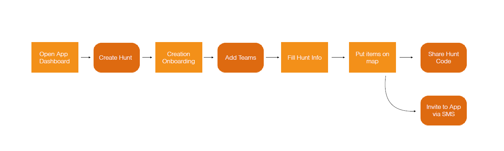
Information Architecture
Shifted the focus on the map search, as well as made the active hunt a dashboard issue. Sharing is given a larger role in passing hunts from user to user. All hunts can be found on the map rather by keywords on a search,
however this remains an option.
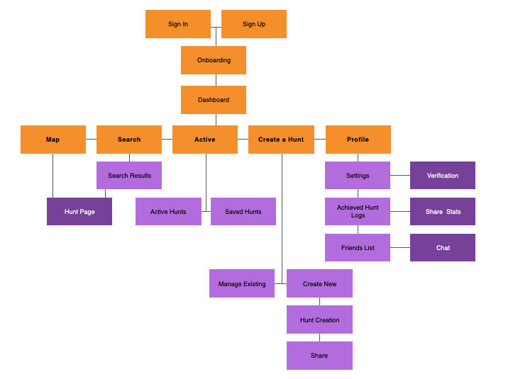
Part IV: Wireframe & Prototype
Wireframes
Handdrawn
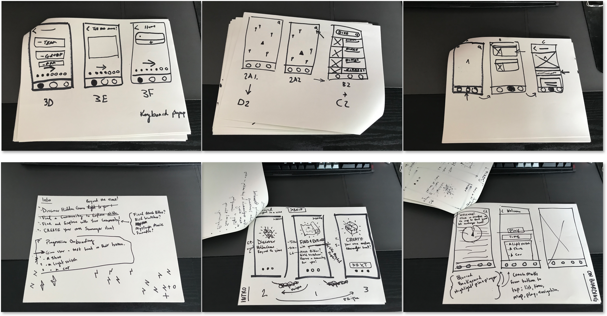
Mid-Fidelity Wireframes
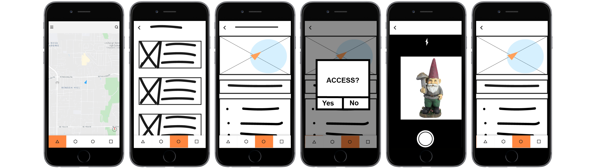
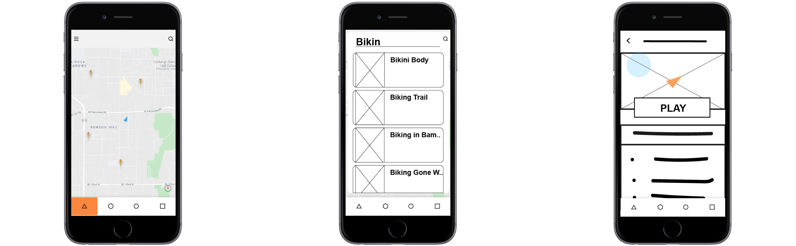
After I have my layout decided on, I will transfer them to illustrator since it is the program I am most comfortable and effiecient with. The wireframing and prototyping process is the always my favorite time to
make rapid changes and try out the little changes and test them out quickly. I feel like this part lets me discover more about my design process.
For example: My early wireframes and low to mid-fid prototypes had a hamburger menu in the top left with everything tagged in it. Later on, I opted to remove it as it wasn't being used in user testing and stole real
estate from having an outstanding search bar.
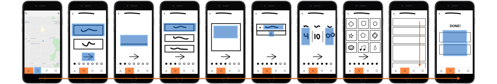
Create a Hunt is simplified to single step as to not overwhelm the user. Hitting the arrow progresses to the next step. Showing the simplified flow and highlighting the hotspots and gestures used.
Need a search filter or a category instead of common words.
Severity
High
Evidence:
Users expected the associated word to be the first result by title. The search results were an obvious hurdle.
Suggested Change:
Seperate common keywords into categories instead. Expand a filter into the search menu.
Issue:
Limitations screen is unclear.
Severity
High
Evidence:
Appearence of this screen would jar participants. Placeholder icons made this screeen seem like tic-tac-toe more than an options menu.
Suggested Change:
Replaced placeholder icons with suitable and add short titles.
Issue:
Hitting Play is not an obvious way to activate or add a hunt.
Severity
High
Evidence:
Two participants were confused on the wording between "Play" in the app and "Add" when given the task to "Add a hunt to your active hunt list"...
Suggested Change:
Add a bookmark or star icon. Separate active hunts and saved hunts by tabs.
Part VI: Design Iteration
Design Principles
One super positive of being able to get your designs tested as much as possible and get feedback as quickly as possible. This meant there was a lot of little changes, in things like sizing or layout, that would
make a universal change in user experience.
This also means I could take advantage of responsive gridding and other design heuristics to design Yondr to feel like a familiar and more realiable mobile app.